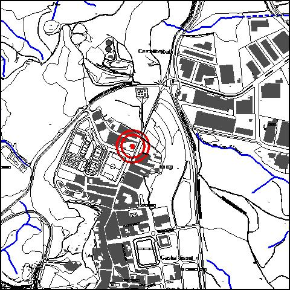
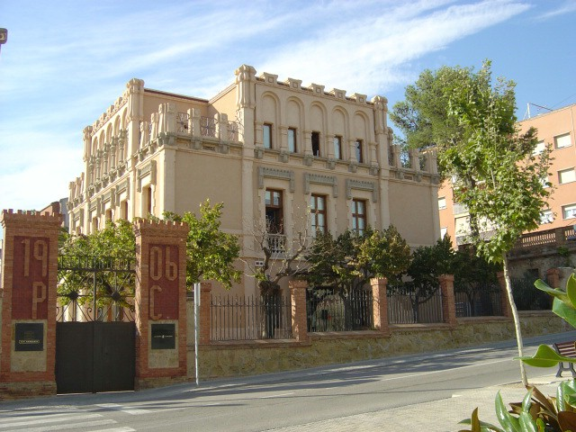

|  |  |
Nom de l’element: Can Margarit
Clau d’identificació: A.02
Nucli o indret: Nucli urbà, c/Major núm 103.
UTM: X=415.050, Y=4.592.717
Règim del sòl: sòl urbà.
1.1. Època de construcció i tipologia:
L’edifici està datat entre el 1887 i el 1906. Presenta formes eclèctiques, murs d’obra revestida de pedra i una coberta plana. És un edifici de caràcter monumental aïllat i envoltat d’un jardí, de planta baixa i dues plantes pis. El seu volum és quadrat i a l’alçada del segon pis es converteix en un cos de planta de creu grega amb els angles residuals formant terrasses. Presenta una exuberant decoració a les obertures, remats de façana i cornises a manera de marlets.
1.2. Estat de conservació:
Molt bo.
1.3. Ús actual:
Edifici municipal.
1.4. Accés:
Accessibilitat a través del c/ Major.
Antiguitat i característiques arquitectòniques.
3.1. Usos admesos:
Oficines i serveis, educatiu, recreatiu cultural i social.
3.2. Condicions d’ordenació:
Segons Pla Especial a redactar.
3.3. Accés i serveis:
Accessibilitat a través del c/ Major.
BCIL (Bé Cultural d’Interès Local)